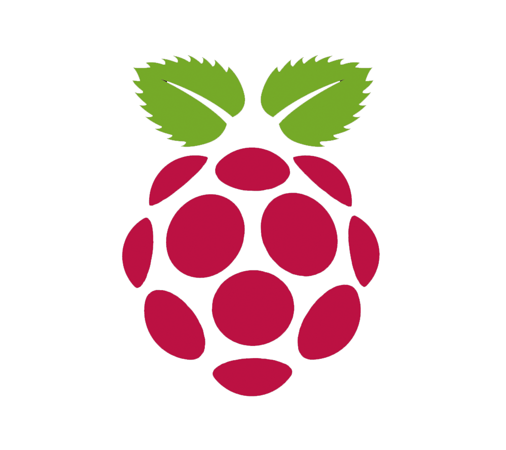

Installation
Installer OSMC sur la carte SD
-

Étape 1
Installation de NOOBS
Pour ceux qui ont acheté une carte avec NOOBS préinstallé, vous pouvez passer à l'étape 2.
- Carte SD minimum 4Go
- Télécharger NOOBS
- Décompresser le fichier .zip
- Copiez le contenu du dossier vers la carte SD
-

Étape 2
Démarrer sur NOOBS
- Au démarrage du Raspberry Pi, appuyez sur la touche SHIFT comme indiqué
- Branchez le câble Ethernet
- Choisissez le/les OS à installer, (OSMC) pour ce tutoriel
- Appuyez sur la touche i du clavier pour installe l'OS sélectionné
- Redémarrez votre RPi, puis sélectionnez l'OS sur lequel vous souhaitez démarrer
-
Étape 3
Démarrage du Raspberry Pi
- Au démarrage du Raspberry Pi, vous avez le choix entre les OS installés précédemment
- Sélectionnez OSMC
- Laissez OSMC démarrer pour la première fois
-
Étape 4
Configuration d'OSMC
- Au démarrage d'OSMC, laissez-le charger et laissez-vous guider par l'assistant
- Pour le Wi-Fi, rendez vous dans MyOSMC, Network, Wireless, cliquez sur "Enable Adapter", puis sélectionnez votre réseau. (Le clavier par défaut est en QWERTY)
- Passez à l'étape suivante pour la configuration du clavier
-
Étape 5
Configuration du clavier en Azerty
-
Retournez à l'accueil, Alimentation, puis Quitter.
À l'apparition du logo OSMC, apuyez sur la touche ESC/ÉCHAP du clavier -
Bienvenue sur le terminal d'OSMC.
On vous demande l'identifiant, qui est "osmc" os,c (QWERTY) et la même chose pour le mot de passe -
Maintenant vous allez mettre votre Raspberry à jour avec la commande suivante
"sudo apt-get -y update"
(QWERTY) "sudo qpt)get )y updqte" -
"sudo apt-get install console-common" / Traduire en QWERTY
À l'ouverture de la fenêtre, sélectionnez "select keymap from full list"
"AZERTY / French / Same As X11 (latin 9) / Standard"
Ou équivalent Apple selon votre clavier
Pour quitter, entrez "exit" et attendez qu'OSMC redémarre
-
Retournez à l'accueil, Alimentation, puis Quitter.